First lay out some cloth below the work area to catch items that you will drop during this project. There’s nothing more frustrating than searching for a small rusted metal nut down on the ground.
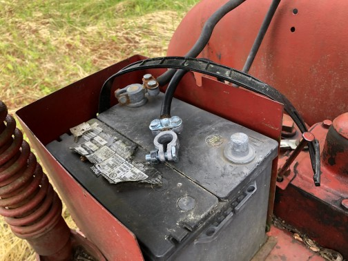Disconnect battery
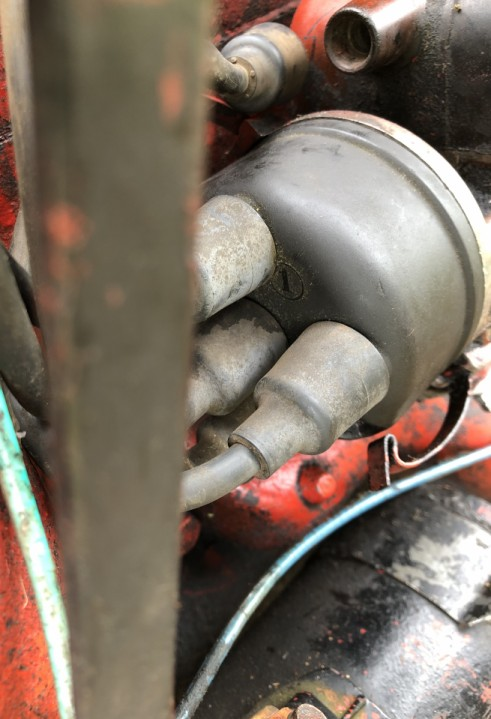Notice where spark plug #1 terminal is marked on distributor cap.
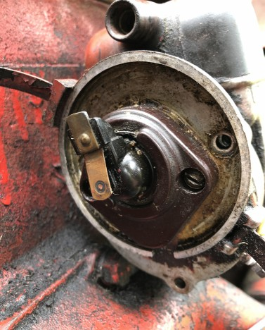Slowly turn the fan or hand-crank engine until the rotor points to where #1 spark terminal is. You will hear clicking within magneto. Stop immediately after click when it reaches plug 1.
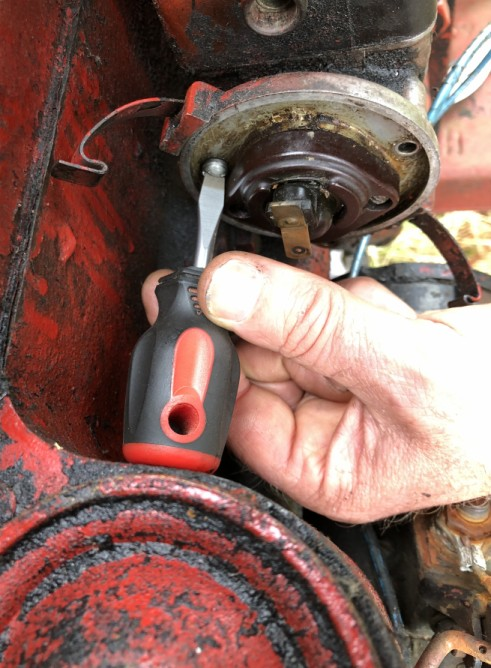Use short screwdriver to remove the 3 screws holding down magneto cover.
No Picture:
Remove the breaker arm point and the contact point and condensor if necessary.
Installation of new condensor is straightforward. Remove the post terminal where coil, condensor and breaker arm, and black plastic insulator are all connected.
Check that new points are free of debris. Perhaps file a little bit and clean off both contacts.
To get the new points installed begin with empty post and stack the the breaker arm (slot inward), condensor spade, the coil terminal, square washer with housing facing down and on the inside, a final washer (copper in the picture), and nut. It's key to get the square washer with housing and the breaker arm lining up well with the face of the post. Use a vice-grip to hold the post square and pliers to move the other elements until they're well lined up and tight.
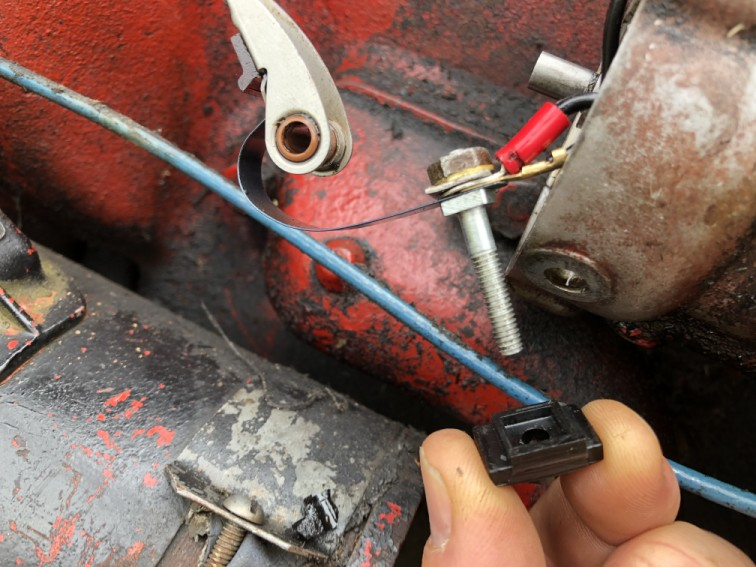Now bring in the plastic insulator with its housing facing up and on the outside face of the post.
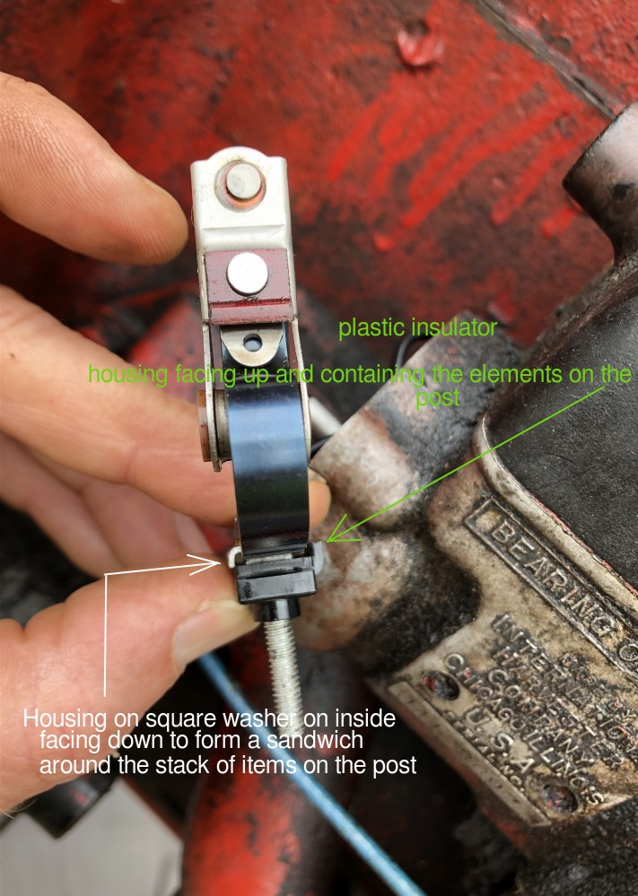The elements all lined up with the housings of the square washer and the plastic insulator forming a sandwich around the elements on the post.
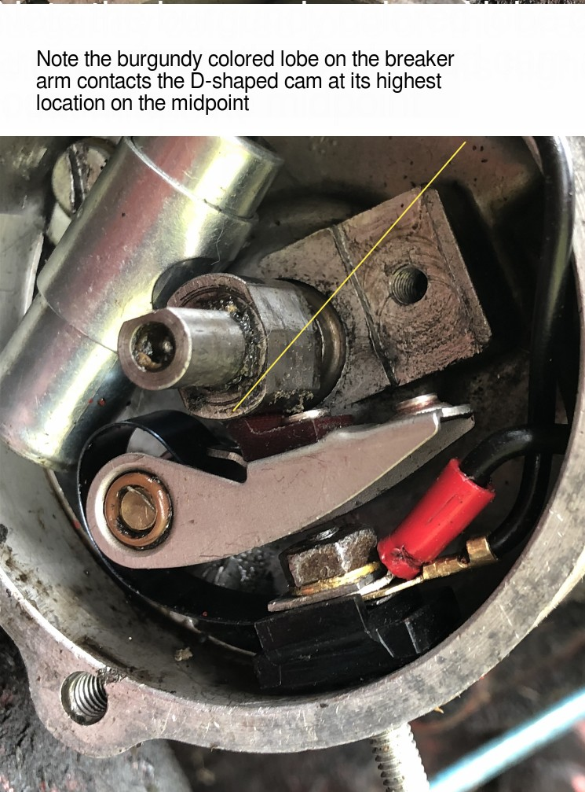Holding the post and the breaker arm together, first get the end of post through the hole in magneto case. Work it down a bit. Bend the breaker arm back to get it into position so it can go on its post. Now work the two things together so that breaker arm goes down onto its post and the post with insulator goes down all the way through the hole in magneto case. Check that lobe on the breaker arm meets the cam on the shaft at the mid high point. If it doesn't, pull back on the breaker arm a bit and move the fan just a little bit to turn the shaft so that things line up well.
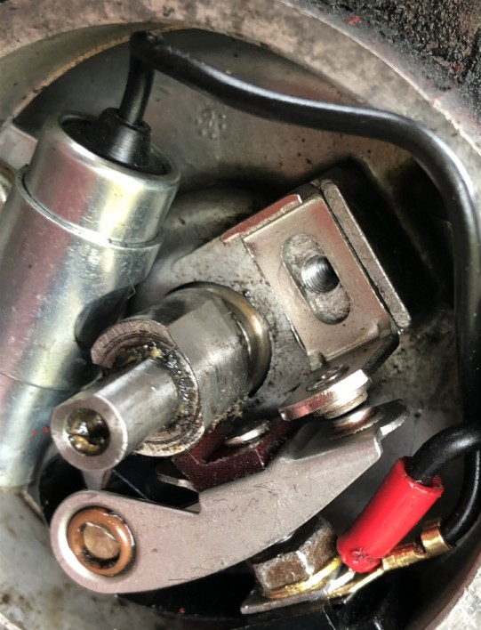Carefully place the top point in position.
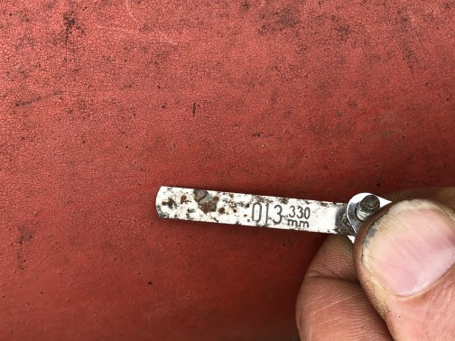Get 0.013" feeler gauge.
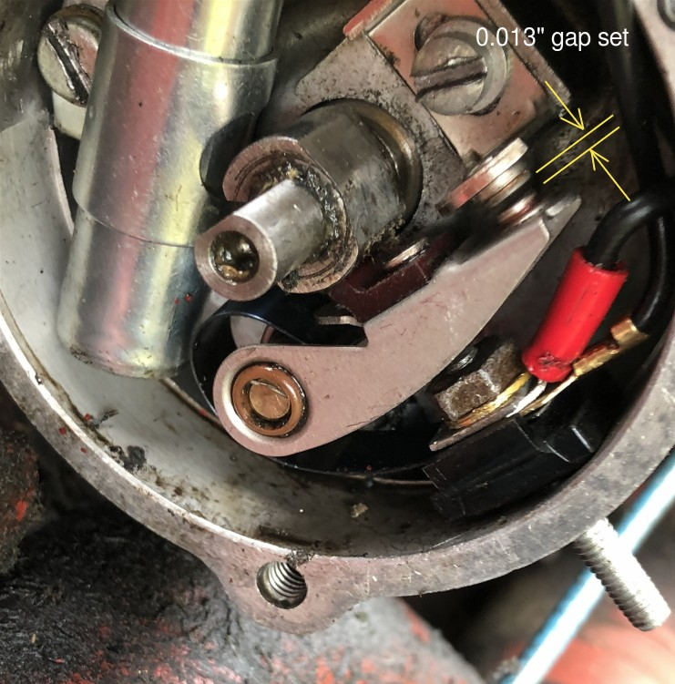Insert screw with lock washer though the point slot. Use feeler gauge to set the gap as you tighten.
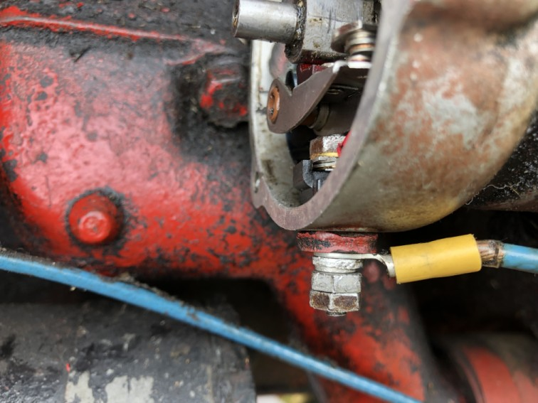First put on the insulating washer followed by the cable (which goes to the ignition switch). Then another washer followed by a nut. Now BE CAREFUL HERE. Overtightening these nuts will cause the plastic insulator on the other side of the magneto case to crack. So tighten that first nut slowly. When things are pretty snug so that you can't move the wire around on the post, add in the second nut and tighten them both just a little bit more so that everything is snug and can't loosen from vibration. Resist the urge to go another 1/4 turn tighter than this!
Reinstall the magneto cover being careful to line up the rotor the way it was when you removed it.